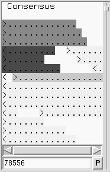
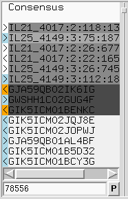

At the left side of the editor window is the "names panel". This either displays an ASCII pictorial summary of the sequence layout or the actual sequence names themselves depending on the settings in use. Between the names panel and the sequences panel is a vertical line, visible at the right edge of the above image. This can be dragged left and right to adjust the proportion of display dedicated to the names and sequence panels.
The default name display looks like this:

This plot is a mini diagram of the way the sequences overlap. Here the > and < symbols represent the start of sequences, assembled on either the forward or reverse strand, with the ... sections reflecting their relative lengths. The background shading indicates the mapping quality of the sequence (which may not be available in many cases, depending on how the assembly was derived). This should indicate the likelihood that the sequence has been assembled to the correct point. Sequence that appears to map elsewhere, e.g. due to a repeat, will be dark grey while unique sequence will be light grey or white. Moving the mouse cursor over a sequence will tell you the precise mapping quality along with additional information such as the sequence name, the technology used (Sanger, Illumina, 454, etc), and whether it is part of a pair of sequences.
In the editor Settings menu is a checkbox labelled "Pack Sequences". When checked we permit multiple sequences to be drawn in the same row. Unchecking this reverts to the Gap4 style of display where each sequence has its own dedicated row. This also has an affect on the names panel, which switches to showing the sequence names, as below.

This still uses the > and < symbols to reflect strand and grey scales for representing the mapping quality. The > and < are now also coloured independently.
At the bottom of the names panel is an editable text field containing the current display position. Adjacent to this is a small "P" indicating these coordinates are "padded". Clicking this will alternate with "R" to indicate reference coordinates, although these may not be available in all situations. Note that currently, for speed reasons, it cannot directly display unpadded coordinates.
Typing into this position entry-box allows us to direct the editor to a specific location. If we end the number with "u" it performs an unpadded to padded conversion before jumping to this location.
Left clicking on a name will toggle the background between the current grey to a shade of blue (with luminosity once again reflecting mapping quality). This indicates that the sequence name has been added to the "readings" list. Multiple names may be selected and deselecting by pressing and holding the left mouse button while moving the mouse cursor.
In both display modes, pressing the right mouse button brings up a context sensitive menu containing operations relevant to that specific sequence. This may contain the following commands.
Right clicking on the contig name also pops up a menu. In here are otions to change the contig name or the starting coordinate. These options are also available in the editor Commands menu.